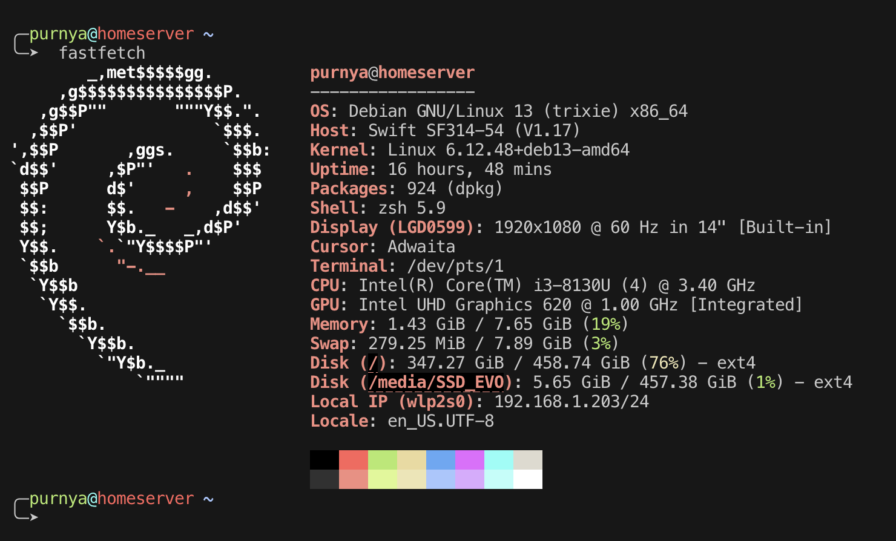

Disclaimer : I'm not a good writer, and I don't know what I'm doing, don't replicate what I did 1:1, if you want to have a homeserver as well, get inspired to do better than me! This is not a straightforward tutorial, im just blogging around, yapping blabbering bubbering. Didn't even finish properly the article
A while back I've had the luck of obtaining a shit crappy laptop from my father, a Swift SF314-54. Its specs were really nothing extraordinary:
My homeserver runs on a Debian GNU/Linux 13 (trixie) x86_64 installation.

I had to go through a huge hassle to install it, not because the installation itself was difficult, but because in the big year of 2025 I didn't have a USB stick lying anywhere, so what I did was using an external SSD that I had as a Dr. House archiver, delete all of its contents, and use it as a bootable Debian installer.
The laptop as a server is supposed to be always on, which means that
it's constantly plugged in. Needless to say but it is not good to have your
battery constantly charging all the time, since it leads to overheating,
makes the battery swollen and therefore cause a massive explosion in your house!! Oh nouh!
So what I did is simply open up the laptop and disconnect the battery, so now the laptop
runs always on AC.
Having the laptop's lid open at all times is not ideal, and so is having the display always on, the power consumption
of the light is outrageous! I needed a way to have the lid closed, turn off the display but still have it run as normal.
To solve this, I edited the file /etc/systemd/logind.conf and set the following parameters:
/* ... */
HandleLidSwitch=lock
HandleLidSwitchExternalPower=lock
HandleLidSwitchDocked=ignore
/* ... */
/etc/systemd/logind.conf : It's one of the configurations files of the systemd login manager. What this means is that this contains settings that control how the login manager behaves when you login/logout, how the power is managed, how the session is managed etc. etc.
These are the services that I am currently running :
A free and open-source media server, I mainly use it to host TV-series, movies and anime.
A file server, a very cool and simple to setup one. It serves files, it can also modify files!
The service I use most, it's a music server. I have downloaded/purchased countless albums, put them all on my server and use this service to play them either on my browser, or using symfonium as a client on my phone! My goal was to use spotify less thanks to this, instead I just stopped using it altogether !.
Where do you think I get the anime and movies from heh.
Where do you think I get music from heh.
Manga reader server, I don't use it much at this point, it's more for my gf to use when she wants to.